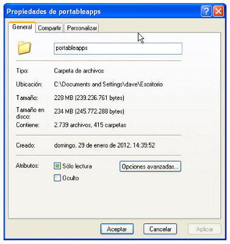

Ejercicio 1. Ocupación de espacio.
- Conéctate a Google, busca una imagen del Partenón griego y descárgala al escritorio. ¿Cuánto ocupa esa imagen? ¿Me cabría en un llavero USB?
- ¿Cuánto ocupa la carpeta donde hemos instalado las PortabeApps? ¿Cabría en un llavero USB?
- ¿Cuánto espacio hay en el disco duro del ordenador, y cuánto de él ya está ocupado?
Para hacer estas comprobaciones tienes que pulsar con el botón derecho del ratón y buscar la opcion Propiedades.
En la práctica de hoy empezaremos a utilizar programas descargados desde las Portable Apps y que puedan ser útiles para nuestro día a día con el ordenador.
Ejercicio 2
Ya tenemos instalada la aplicación de las Portable Apps. Instálate las siguientes aplicaciones.
- Instala Foxit Reader. Es un visor de PDF's.
- Utiliza ahora el programa que acabas de instalar para abrir el documento que te he enviado por correo electrónico.
- Instala Peazip. ¿Sabrías abrir con Peazip el documento comprimido que te he enviado por correo? ¿Qué hay en él?
- Consula la instalación de Libre Office. Antes de instalar, consulta cuánto espacio va a ocupar. ¿Ocupa mucho o poco?